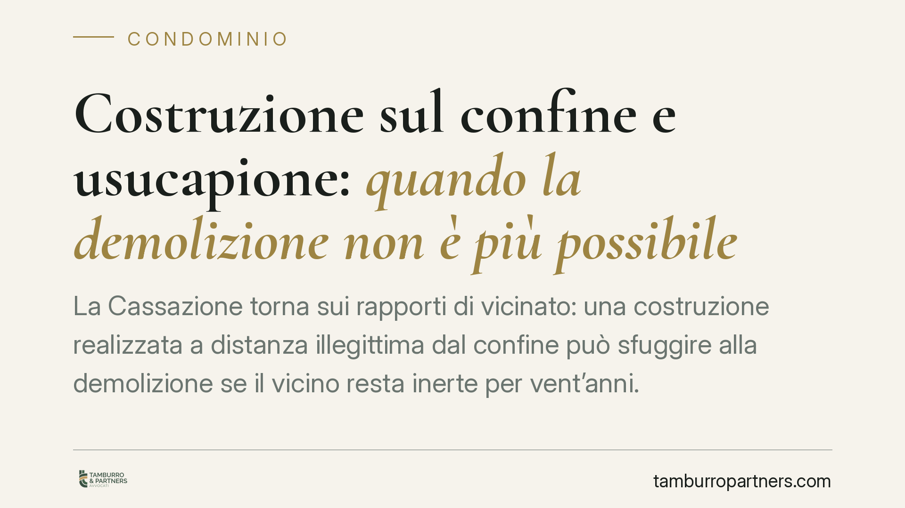

Costruzione sul confine e usucapione: quando la demolizione non è più possibile
La Cassazione torna sui rapporti di vicinato: una costruzione realizzata a distanza illegittima dal confine può sfuggire alla demolizione se il vicino resta inerte per vent'anni. Matura infatti l'usucapione della servitù che consente di mantenere l'opera. Un principio che pesa su proprietari confinanti e amministratori, e che impone attenzione ai termini.

Il caso
La Seconda Sezione civile della Cassazione ha affrontato una questione ricorrente nei conflitti tra confinanti: cosa accade quando un fabbricato viene costruito senza rispettare le distanze legali dal confine e il vicino non reagisce per un lungo periodo.
La risposta è netta. Trascorsi vent'anni senza contestazione, il proprietario dell'opera irregolare può aver acquistato per usucapione il diritto a mantenerla dove si trova. In quel caso la domanda di demolizione avanzata tardivamente dal vicino non può essere accolta.
È bene precisare un punto per evitare equivoci: l'usucapione qui non riguarda la proprietà del suolo altrui, ma la servitù che deriva dalla violazione delle distanze, cioè il diritto di tenere la costruzione a distanza inferiore a quella imposta dalla legge.
Inquadramento normativo
Le distanze tra costruzioni sono disciplinate dagli articoli 873 e seguenti del Codice civile, che fissano la distanza minima di tre metri tra fabbricati (salvo diverse previsioni dei regolamenti locali, spesso più rigorosi).
Quando queste regole vengono violate, il vicino può chiedere la riduzione in pristino, cioè la demolizione dell'opera abusiva. Si tratta però di un diritto non imprescrittibile nei suoi effetti pratici.
Interviene infatti l'articolo 1158 del Codice civile: il possesso continuato per venti anni consente di acquistare per usucapione non solo la proprietà, ma anche i diritti reali di godimento, tra cui le servitù. La costruzione mantenuta a distanza illegittima integra una servitù apparente e continua, come tale usucapibile.
Il termine ventennale decorre dal completamento dell'opera, non dalla scoperta della violazione. È la data della costruzione, quindi, a segnare l'inizio del conto alla rovescia.
Implicazioni pratiche
Per chi possiede un immobile, la decisione ha un doppio volto.
Dal lato di chi subisce la costruzione irregolare del vicino, il messaggio è chiaro: l'inerzia costa. Chi lascia trascorrere vent'anni senza agire rischia di perdere il diritto di ottenere la rimozione dell'opera, che diventa così legittimamente stabile.
Dal lato di chi ha costruito in violazione delle distanze, la pronuncia offre un margine di tutela, ma non una sanatoria automatica. L'usucapione va accertata e provata in giudizio, dimostrando il possesso continuato, pacifico e ininterrotto per l'intero periodo.
Restano poi ferme le eventuali conseguenze urbanistiche e amministrative dell'abuso edilizio: l'usucapione incide sui rapporti civilistici tra privati, non elimina le responsabilità verso la Pubblica amministrazione né eventuali profili sanzionatori.
In ambito condominiale, la questione si complica quando la costruzione insiste su parti comuni o modifica lo stato dei luoghi in danno di altri condòmini. Anche qui la tempestività della reazione è determinante, e la delibera assembleare non sospende i termini di prescrizione o usucapione.
Cosa fare in concreto
- Verificate subito le distanze. Se sospettate una violazione nella costruzione di un vicino, accertate misure e data di realizzazione dell'opera senza rinviare.
- Non lasciate decorrere il tempo. Se intendete opporvi, agite in via giudiziale o inviate una diffida formale prima che maturi il ventennio.
- Documentate la data della costruzione. Fotografie, permessi edilizi, dichiarazioni di inizio lavori e testimonianze sono decisivi per stabilire il dies a quo.
- Chi ha costruito conservi le prove del possesso. Utenze, atti, documentazione continuativa aiutano a dimostrare l'usucapione in caso di contenzioso.
- Distinguete il piano civile da quello amministrativo. Consigliamo di valutare separatamente il rischio di demolizione tra privati e le possibili conseguenze urbanistiche dell'abuso.
Conclusioni
La pronuncia conferma un principio consolidato ma spesso trascurato: nei rapporti di vicinato il tempo produce effetti giuridici concreti. La tutela della proprietà non è illimitata quando resta inattiva.
Chi ritiene di subire una violazione delle distanze farebbe bene a muoversi con tempestività; chi ha edificato in modo irregolare non può considerarsi al riparo senza un accertamento adeguato. In entrambi i casi la valutazione richiede un esame puntuale della situazione di fatto.
Contributo informativo a cura di Tamburro & Partners - Avv. Giuseppe Tamburro. Non costituisce parere legale.
Ogni condominio ha una storia a sé.
Se gestisci un'amministrazione e vuoi un confronto su una specifica questione condominiale, scrivi allo studio. Ti rispondiamo entro un giorno lavorativo.